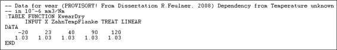
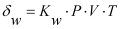
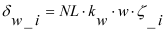

|
|
|


齿面磨损
在计算齿面的局部磨损之前，必须先定义材料的磨损系数 kw。该系数可以使用齿轮测试设备或通过简单的试验程序（例如销盘试验台）来测定近似值。目前正在进行研究，以确定通过简化测量方法确定的系数 kw 可以多准确地应用于齿轮。要进行精确预测，还需要确定材料配对下的系数 kw。例如，POM 与 POM 配对的结果不同于 POM 与钢配对。
塑料
对于塑料，可以在聚合物数据文件中根据温度输入磨损因子 kw（例如，POM 对应 Z014-100.DAT）。数据以 106 mm3/Nm 为单位输入。
例如：

钢
普莱的调查表明，钢材料的磨损系数可以近似定义。另见钢材材料磨损系数的计算（钢材材料的磨损系数 kw 计算章节）。
计算
磨损根据以下基本公式进行计算：

(δw [mm], kw [mm3/Nm], P: 压力 [N/mm2], V:速度 [m/s], T:时间[s])
根据齿轮条件进行修改后，局部磨损由以下因素引起：

(i = 1.2)
(δw_i [mm], kw [mm3/Nm], NL: 载荷循环次数，w: 线载荷 [N/mm], ζ_i: 单位滑动比)
该公式也对应于 [61] 中的公式 6.1。
确定齿面磨损的计算在每个啮合点处使用以下取自啮合线计算的数据：
- 单位滑动比
- 线载荷
在 23°C 下 POM 对 POM，[61] 给出的 kw 值为 1.03 * 10-6 mm3/Nm。POM 对钢时，它给出的 kw 值为 3.7×10-6 mm3/Nm。
在解释结果时，请注意齿面磨损的增加会在某种程度上改变局部条件（线载荷、滑动速度），因此也会改变磨损本身的增加量。
Wear along the tooth flank
Before you can calculate local wear on the tooth flank, you must first define the material's wear coefficient kw. This coefficient can be measured using gear testing equipment or by implementing a simple test procedure (for example pin and disk test rig) to determine the approximate value. Investigations are currently being carried out to see how accurately the coefficient kw, determined using a simplified measurement method, can be applied to gears. For exact forecasts, you will also need to determine the coefficient kwfor the material pairing. For example, POM paired with POM does not supply the same results as POM paired with steel.
Plastics
You can input the wear factor kw in the polymer data file, for plastics, depending on the temperature (for example, Z014-100.DAT for POM). The data is input in 106 mm3/Nm.
For example:
Steel
Plewe's investigations have revealed that a rough approximation of the wear coefficients for steel materials can be defined. See also the calculation of wear coefficients for steel (see chapter Calculation of the wear coefficient kw for steel).
Calculation
Wear is calculated according to the following basic equation:
(δw [mm], kw [mm3/Nm], P: Pressure [N/mm2], V:Velocity [m/s], T:Time[s])
As modified to suit gear conditions, local wear results from:
(i = 1.2)
(δw_i [mm], kw [mm3/Nm], NL: Number of load cycles, w: Line load [N/mm], ζ_i: specific sliding)
This equation also corresponds to the data in [61], Equation 6.1.
The calculation used to determine wear on the tooth flank uses the following data at each point of contact taken from the calculation of the path of contact:
- Specific sliding
- Line load
POM against steel (at 23°C), [61] gives a kw value of 1.03 * 10-6 mm3/Nm. Against steel, it gives a kw value of 3.7*10-6 mm3/Nm.
When you interpret the results, note that the increasing wear on the tooth flank changes local conditions (line load, sliding velocity) to some extent, and therefore also changes the increase in wear itself.